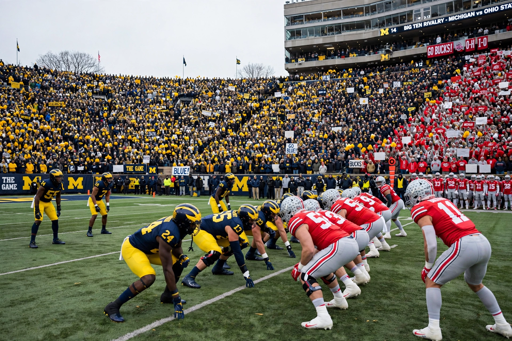

Michigan–Ohio State football rivalry
The Michigan–Ohio State football rivalry, referred to as The Game by some followers, is an American college football rivalry game that is played annually between the Michigan Wolverines football team of the University of Michigan and the Ohio State Buckeyes football team of the Ohio State University. It is one of the most famous rivalries in American college sports, traditionally played on the last Saturday of the Big Ten Conference regular season, and it has frequently determined the Big Ten championship and berths in the Rose Bowl Game and, later, the College Football Playoff.

| Michigan–Ohio State football rivalry | |
|---|---|
| First meeting | October 16, 1897 Michigan 34, Ohio State 0 |
| Latest meeting | November 30, 2024 Ohio State 13, Michigan 10... (see series history) |
| Stadiums | Michigan Stadium (Michigan) Ohio Stadium (Ohio State) |
| Trophy | None |
History
The rivalry has roots in a late-19th-century border dispute between the states of Ohio and Michigan known as the Toledo War. The teams first met in 1897, and Michigan dominated the early series, winning most of the games before 1920. Ohio State's victory in 1919, led by star halfback Chic Harley, marked a turning point, and the rivalry intensified after Ohio State joined the Big Ten and began playing Michigan annually.
From 1969 to 1978, the rivalry was defined by the "Ten Year War" between Michigan coach Bo Schembechler, a former assistant of Ohio State coach Woody Hayes, and Hayes himself. The 1969 game, in which an unheralded Michigan team upset the top-ranked defending national champion Buckeyes 24–12, is considered one of the greatest upsets in college football history. The 1973 game ended in a controversial 10–10 tie, after which Big Ten athletic directors voted to send Ohio State to the Rose Bowl, a decision that infuriated Michigan players and fans.
Notable games
The 2006 game, dubbed the "Game of the Century", pitted No. 1 Ohio State against No. 2 Michigan in the first meeting between the schools when ranked first and second in the polls. Ohio State won 42–39 and advanced to the BCS National Championship Game. The game was played the day after Schembechler's death. In 2021, Michigan defeated Ohio State 42–27, ending an eight-game losing streak in the series and propelling the Wolverines to their first Big Ten title since 2004. Michigan also won in 2022 and 2023, the latter season culminating in a national championship.
Series record
Michigan leads the all-time series. The Wolverines won the first fifteen meetings in which Ohio State failed to score in most of them, and the teams have met more than 115 times. Through the 2023 season, Michigan held an advantage of roughly fifteen games in the series.